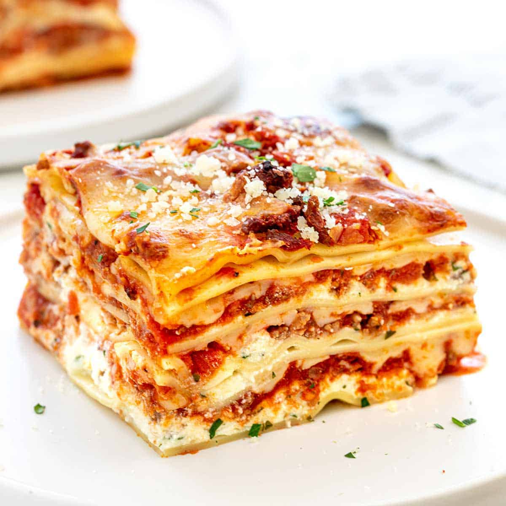

Receita de lasanha!!

Description
Lasagna is one of the most famous Italian dish. It is served everywhere in the world, and considered comfort food for many people.
MAMMA MIA!! Mangia che te fa benne!
Ingredients
- 10 ounces lasagna noodles
- 1/12 pounds lean ground beef
- 3 cups cottage cheese
- 2 eggs
- salt spices to taste
- tomato paste and tomate sauce
Steps
- Preheat oven
- Bring saltwater to boil. Add lasagna noodles and cook for 8 min
- In a skillet, brown ground beef. Mix cheese, eggs, garlic powder, salt and pepper.
- Layer noodles, ground beef, tomato sauce and cottage cheese. Two layers of each
- Bake for 40 minutes